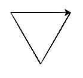

Write whatever turtle commands are necessary to draw an equilateral triangle of side 100 units. The figure should look like the following after the drawing is complete. .
Hints: rt(120);fd(100) repeated three times. Paste the lines three times and then run it. Why is the turn angle 120 degrees and not 60 degrees ?
Draw the triangle from Assignment 1 using a for loop. Note that for is a python keyword. You must never name your own variables same as a keyword.
Draw the triangle from Assignment 1 using a while and a do-while loop. Simultaneously, print the side-number in the console
Use a for loop to print 10 random numbers in the range [1,100]. The output of the program would be a sequence of random integers within the given range.
Adapt the last program given to draw an equilateral triangle with randomly colored sides. Run it 3 times and list the color of the sides you get.